חוגגים עשור- חופשה זוגית בקורפו
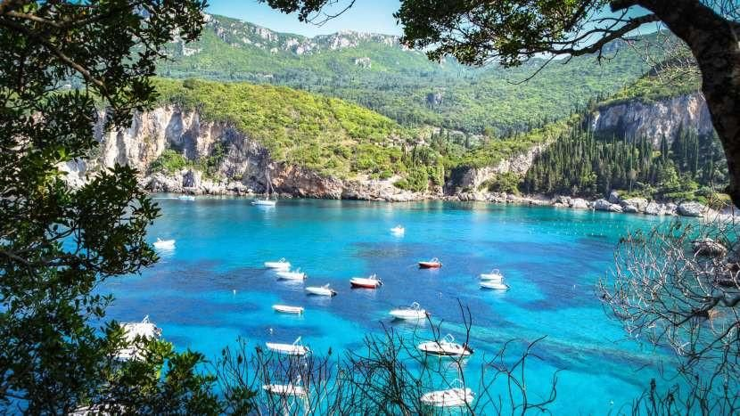
השנה חגגנו 10 שנות נישואין, זו סיבה טובה לחגוג בטיול ועוד פעם ראשונה בטיול בלי ילדים, מאז שהם נולדו אנחנו מטיילים רק איתם וכבר שכחנו מה זה חופשה זוגית.
היעד הנבחר זה קורפו, אי יווני במערב יוון בין האיים הגדולים והמפורסמים של יוון, פשוט כי חיפשנו משהו זול וקרוב, המתאים גם לבטן גב וגם לטיולים.
הזמנו כרטיסים בלי מזוודות, כי מה אנחנו תכלס צריכים חוץ מבגד ים, וכן את הרכב הקטן ביותר- זוג בלי מזוודות והכבישים בקרופו צרים מאוד ומפותלים מאוד.
קופרו היא אי גדול, הצד המזרחי של האי שופע מלונות וריזורטים, הצד המערבי שופע מפרצים משגעים ונופים מטורפים, הצפון הררי ומלא בכפרים קטנים ומקסימים, הדרום פחות מתוייר משום מה, ודי מישורי.
התלבטתי מאוד איפה להזמין מלון, רצינו מלון למבוגרים בלבד, עם נוף יפה מהחדר ולא יקר נורא, הצד המערבי די נפסל בגלל מיעוט האופציות ומה שהיה קיים היה ממש יקר, בסוף בחרנו באיזור קלאמי בצפון מזרח, מספיק מבודד ועם נוף משגע, שעה נסיעה לכל כיוון באי, פרט לדרום.
התאכסנו במלון סן אנטוניו, מלון חביב על צלע ההר, נוף משגע ובקרבתו מס' מסעדות וטברנות, שפע מפרצונים משגעים סביבו, אולם בגלל שהמלון חצוב על צלע ההר הוא לא מתאים למי שיש בעיות ניידות, אמנם יש מעליות אבל עדיין צריך לטפס לא מעט מדרגות, אנחנו עשינו אחלה כושר.
קורפו אי משגע, אולם בעונת הקיץ מאוד עמוס, והעומס מורגש הן בכבישים והן בחופים.
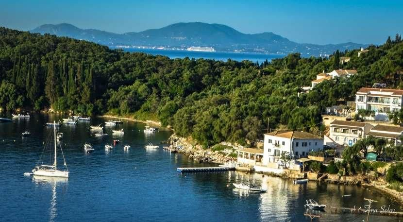
יום 1 6 ליולי-
הטיסה שלנו עם ישראייר יצאה בזמן וללא בעיות, נחתנו כמתוכנן בשעה חמש באי קורפו. בגלל שאנחנו בקיץ מחשיך יחסית מאוחר, כך שזה יתרון אדיר למי שרוצה לנצל את מרבית היום לטיולים. לקחנו רכב מחברת YOURS שהיו בסדר גמור, בכוונה הזמנו רכב זוגי וקטן כי הכבישים באי צרים ומפותלים. בגלל שלא אכלנו צהריים אז נסענו לאיזור קנוני ולקפה SKY VIEW בכדי לנשנש משהו קטן. אזור קנוני נמצא בפאתי עיר הבירה של קורפו- קרקירה, מדובר בשכונה חביבה שמשקיפה על מסלול ההמראה והנחיתה שנמצא על המים, ואכן מבית הקפה רואים את המסלול היטב, אז בזמן שצפינו במטוסים נהננו מהביס הראשון של סלט יווני.
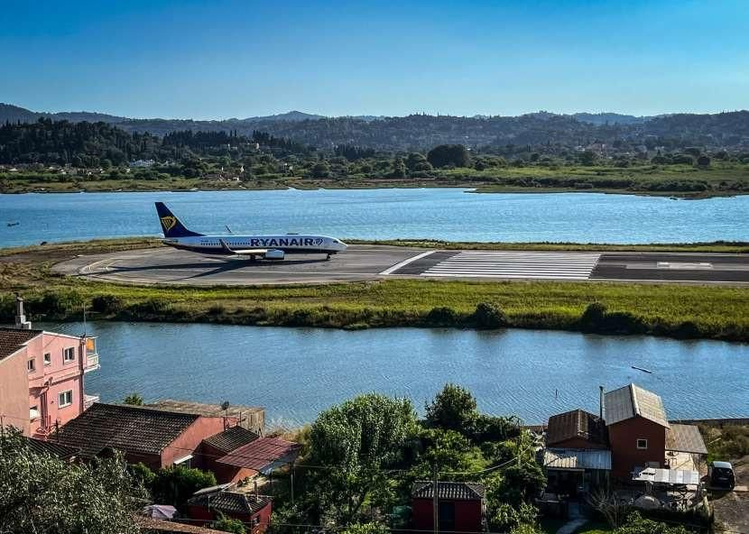
שימו לב שבמקום יש עוד כמה בתי קפה חביבים בסגנון, וכמו כן נמצא שם אי העכברים וה-Vlacherna Monastery, מנזר הנמצא על המים ומשקיף לאי העכברים- לשם הגענו ביום האחרון.
שבעים התחלנו בנסיעה לכיוון המלון, רק כדי לגלות ששכחתי את המטען לטלפון בארץ, למזלי בכל קיוסק באי מוכרים מטענים.
הדרך הובילה אותנו דרך קרקירה השוקקת חיים, ומשם לאורך החוף המזרחי, בהתחלה מדובר בכביש טוב ומישורי אולם לאט לאט לאחר איזור ברבטי, שבעצמו נחשב למיקום לא רע באי, הדרך החלה לעלות והכביש הוצר, וכך בנסיעה איטית בכביש צר תוך כדי תמרון בין טרקטורונים, אופנועים, משאיות והולכי רגל המשכנו בנסיעה ליעד. לא סתם קורפו נקרא האי הירוק, בכל מקום צמחיה שופעת, עצים, שיחים, פרחים, והים הטורקיז שמציץ בכל עיקול. רעש הציקדות מחריש אוזניים- אם אתם מחפשים שקט או רגישים לרעש ציקדות זה לא המקום בשבילכם.
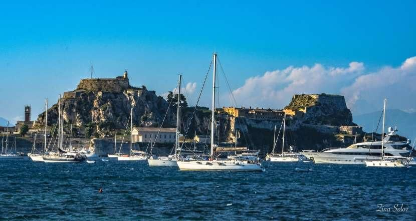
חלפנו גם על פני העיירה ניסאקי והחופים שלה ולאחר שעה וקצת הגענו לקלאמי, מדובר במפרץ יפיפה עם 4 מסעדות, מלון אחד והרבה דירות להשכרה.
כאמור מלון סאן אנטוניו נמצא על צלע ההר, למלון 2 חניות- אחת למעלה על הכביש הראשי ואחת למטה מהחוף. חנינו למטה, כי לקח לנו כמה ימים להבין שלמעלה יש גם חניה. קיבלנו חדר זוגי נחמד ביותר עם נוף משגע על המפרץ. במלון 2 בריכות, אחת למעלה הצופה למפרץ ואחת למטה ליד מסעדת ארוחת הבוקר של המלון, האמת נכנסנו לבריכה רק פעם אחת, מי בא ליוון בשביל הבריכה כשיש ים כזה משגע.
בגלל שאנחנו גוועים ברעב והשעה כבר כמעט עשר ירדנו לאכול בטברנה הסמוכה למלון, באותו הערב היה שם גם מופע יווני אותנטי ורועש, האוכל נחמד- אין על סרדינים טריים מטוגנים עם חמאה.
לצערי לא שמנו אלתוש ויתושי קורפו נהנו לסעוד אותנו בזמן שאנחנו אכלנו סרדינים ממימי קורפו.
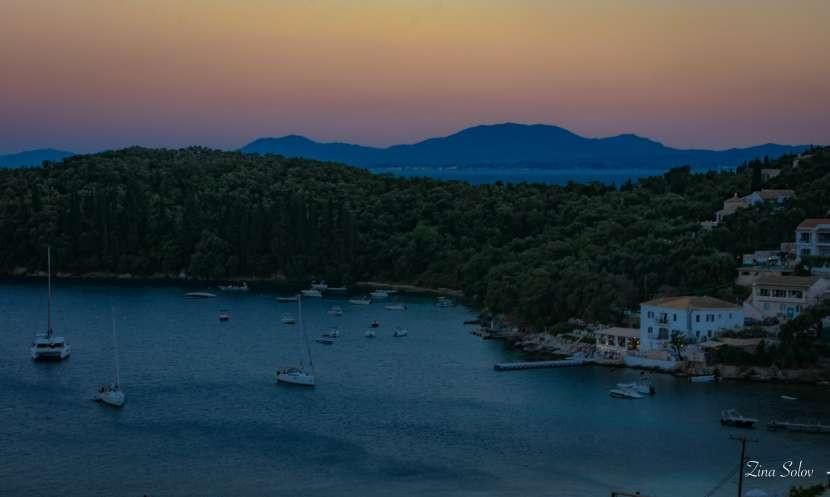
יום 2 7 ליולי-
מסתבר שקשה לשנות הרגלים, גם בחופשה. התעוררנו בשבע בבוקר, יקיצה טבעית, פתחנו את התריס ואווו, איזה נוף, מראה המפרץ באור הבוקר פשוט עוצר נשימה.
לא התמהמהנו, ישר עלינו על בגדי הים, וירדנו למטה במיליון המדרגות ישר לחוף. אנחנו הבודדים שהשקימו קום כך שקיבלנו חוף כמעט פרטי, למעט עוד זוג גרמנים והעובדים שהגיעו לנקות את המסעדות לקראת פתיחת הבוקר.
שקט ושלווה, המים טורקיז משגע, צלולים שקופים, עד כדי שלא צריך בכלל משקפת לראות מה קורה על הקרקעית. המים קרירים. לידנו יש מזח קטן ומשולם לקפוץ ממנו למים, בגלל שהאי הררי אז גם המים עמוקים מהר מאוד, אחרי צעדים בודדים, איזה כיף להתחיל כך את הבוקר בטבילה בים המשגע של קורפו.
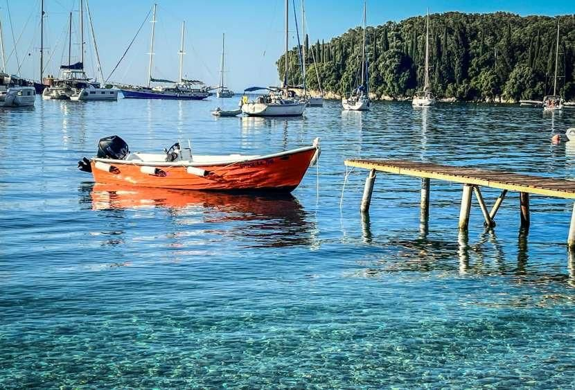
לאחר מכן החלטנו שאנחנו נשארים בכושר ועולים ברגל את כל מיליון המדרגות עד החדר, פעם ראשונה ואחרונה שעלינו ברגל. אחרי מקלחת ארוחת בוקר וקדימה למסלול הטיול שלנו להיום.
התחנה הראשונה להיום היא תעלת האהבה בכפר סידארי. נסיעה נעימה לאורך הצד הצפוני של האי, ברקע רואים את אלבניה קרוב קרוב, חופים מדהימים בצבע טורקיז, עיירות מלאות בתיירים שצועדים בחום להשתזף בחוף כלשהו.
העיירה סידרי היא עיירה חמודה מאוד אם כי מפוצצת תיירים, חנינו בחניון בתשלום סמוך לצוקים והלכנו בשביל בין המלונות. אולי הגענו ביום פחות טוב אבל המים בתעלה היו די גועשים ולא מזמינים לרחצה, אם כי הנוף יפה, מדובר בצוקי חול וביניהם תעלה, Canal d'Amour , שטוענים שמי שישחה זה יתחתן עם בן\בת זוגו, היות ואנחנו כבר נושאים עשור נראה לי שאפשר לוותר על הטבילה
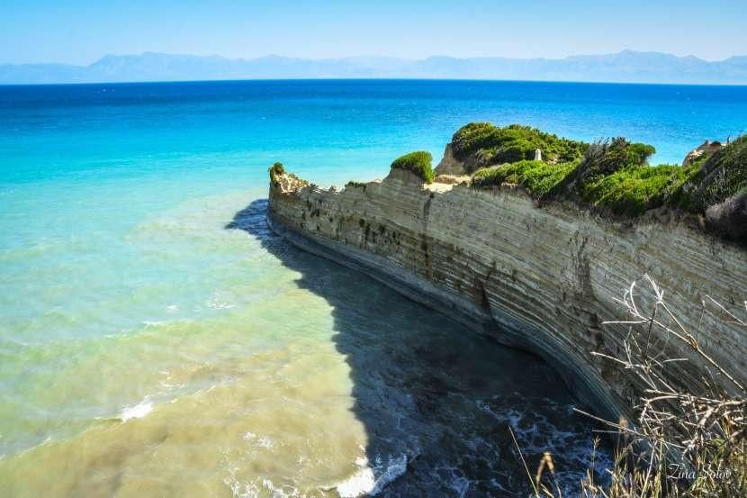
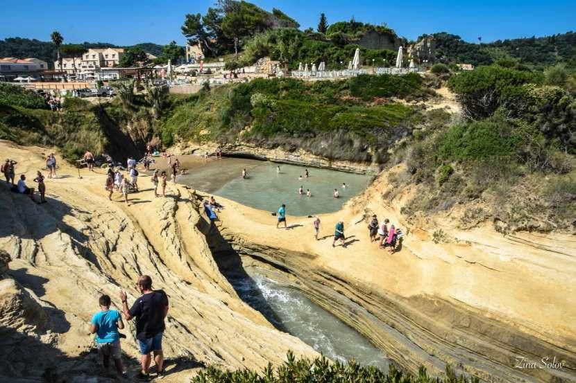
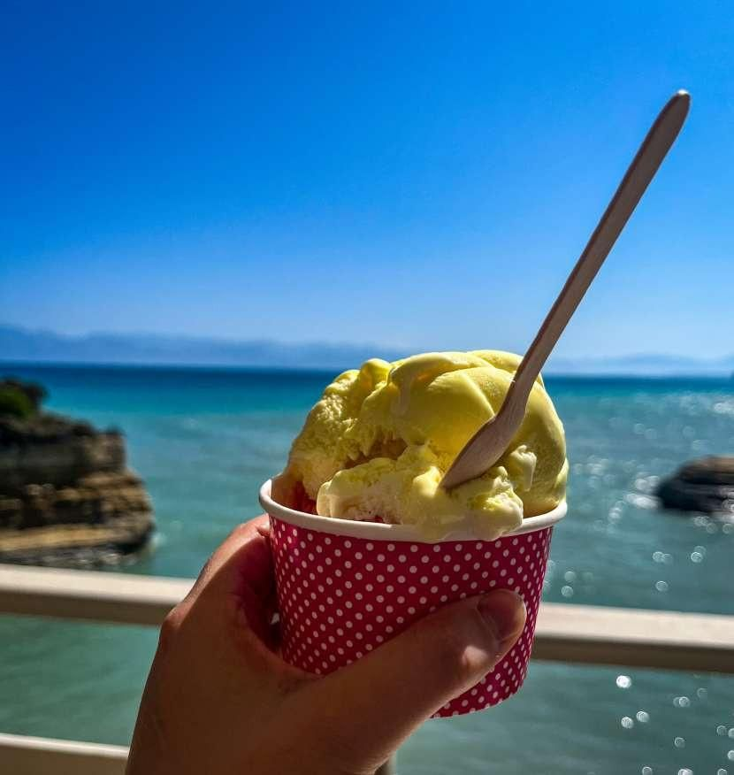
במקום הלכנו לאכול גלידה ולהנות מתצפית יפה על החוף. למי שרוצה ניתן להמשיך לתצפית Cape Drastis ולהנות ממראה מצוקים מזדקרים, כך אומרים לפחות אנחנו ויתרנו והמשכנו ליעד השני להיום- חוף אגיוס גאורגיוס ומשם לפורטו טימוני.
הדרך מסידארי לאגיוס גאורגיוס פשוט משגעת, היא עוברת בין הרים וכרמים, דרך צרה ומפותלת ובכל פיתול עולים יותר ויותר גבוה כשברקע הכרמים והים. אגיוס גאורגיוס היא רצועת חוף די גדולה, במקום יש חניה, מסעדות דירות להשכרה. החוף סלעי, כמו רוב חופי קורפו אבל המים צלולים צלולים. בשני קצוות החוף ניתן לקחת סירה שתיקח אתכם לפורטו טימוני בעלות של 27 יורו לזוג הלוך וחזור. שייט קצרצר של שבע דקות בבריזה יוונית שהעיפה את הכובעים מעל ראשינו והגענו לחוף.
מדובר בפנינה אמיתית, אפילו מזכיר במעט את חוף מאיה ביי בתאילנד. מדובר בחוף מפוצל לשניים כשרצועת אדמה צרה מפרידה ביניהם. ניתן להגיע לחוף בשתי דרכים; 1. סירה- כמו שעשינו, 2. צעדה רגלית מההר למעלה ועד למטה וחזרה למעלה, או לקחת סירה ומונית בחזרה כי הרכב נשאר על ההר בחניון.
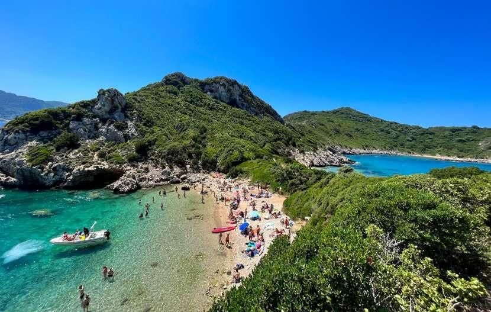
בכדי לצלם את התמונה המפורסמת של שני החופים צריך לעלות מעט בשביל, עלינו טיפה עד שתפסנו את הזווית וירדנו חזרה, היה חם מידי לעשות מסע כומתה עד לפסגה.
לא הופתענו לגלות שהחוף שורץ תיירים עד כדי שאין מקום לשים פיסת מגבת, בסוף מצאנו מרווח לפרוס את הדברים והלכנו לשחות. המים ק-פ-ו-א-י-ם, למרות שבחוץ חום של 30 פלוס מעלות, המים קרים קפואים, צריך ממש לאזור אומץ ולקפוץ פנימה, אבל אם עשיתם את זה זו הנאה מובטחת, לא תרצו לצאת מהמים. כדאי להביא משקפת כי עמוק שם ויש שפע דגים, מצד שני המים כלכך צלולים שאפשר לראות הכל מלמעלה. היינו בחוף כשעה, התקשרנו למפעיל הסירה שהחזיר אותנו לחוף.
השעה שתיים, אנחנו רעבים, החלטתי לאכול באחת המסעדות על ההר שצופה על החוף, סמוך לחניה ממנה יוצאים לירידה לפורטו טימוני יש שפע מסעדות, אולם גם שפע תיירים בשעה זו, עד כדי כך שהחניון המסכן על הפסגה מלא עד אפס מקום. בסוף מצאנו מסעדה ממש נחמדה שנקראת פנורמה, שכל חסרונה היה שהיא היתה יחסית למטה מההמולה, מצד שני האוכל טעים, נוף משגע ויש חניה.
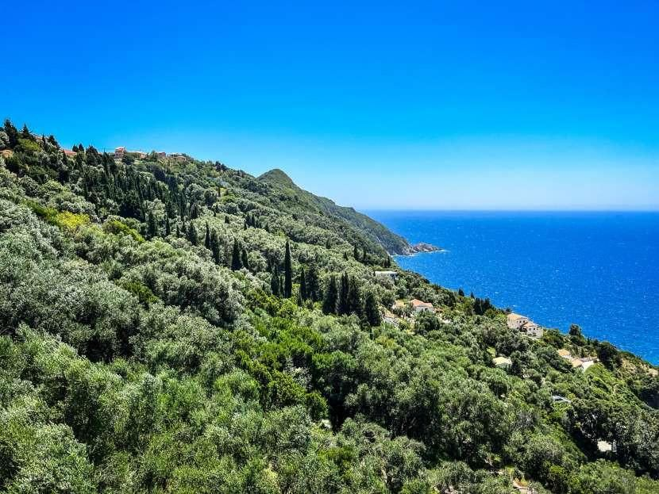
שבעים ומרוצים, אחרי קפה יווני חזק התחלנו את הנסיעה חזרה לכיוון המלון, אולם בדרך החלטנו בכל זאת לעשות עצירה קטנה בכפר הנטוש פריתיה- Perithia. הכפר נמצא בחלק הצפון מזרחי של האי, בדיוק מסתדר לנו בדרך חזרה למלון. מדובר בכפר שננטש לגמרי, כשהזקנים הלכו לעולמם והצעירים לא באו לאכלס אותו. הכפר נמצא הפנים האי גבוה בהרים, נוף פסטורלי ושקט- עד כמה שאפשר שקט עם הציקדות. הכניסה לכפר יש חניה ובעצם יש מסלול שעבור בכל חלקי הכפר שכיום לא היתי מגדירה אותו נטוש אלא יותר מלא בטברנות שרק מחכות לתפוס תיירים. ציפיתי ליותר 'נטישות', בפועל נראה יותר כמו גימיק, ובחום של 30 מעלות היה די מיותר, כפרים כאלה שגם לא נטושים יש בשפע ביוון, סעו לחצי האי פיליון. עשינו סיבוב זריז בכפר, ניסינו למצוא חוות דבורים שהפרסומת שלה ליוותה את השביל ובסוף התייאשנו וחזרנו למלון.
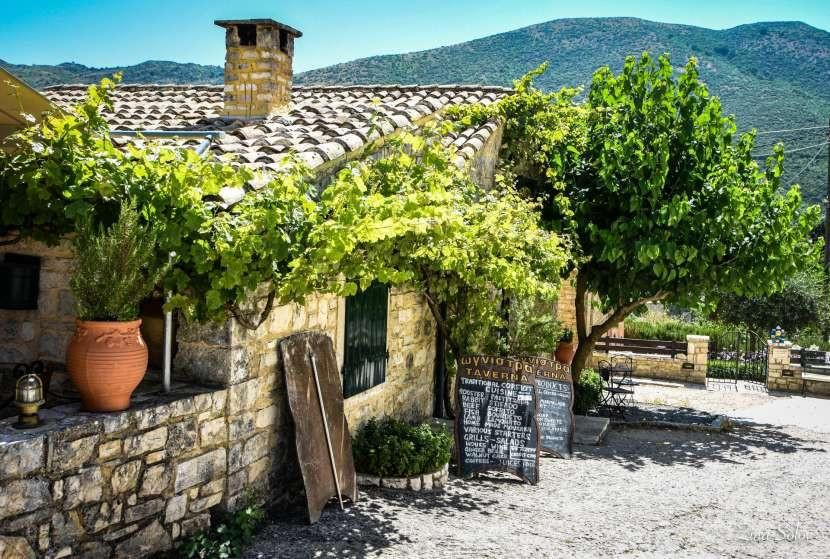
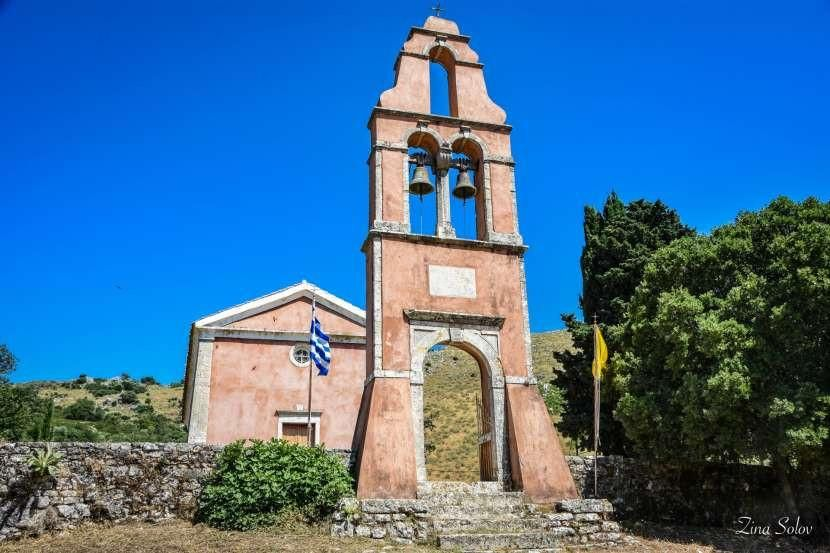
החלטנו לנסות את הבריכה העליונה של המלון, רק שהיא היתה מחוממת, ושם החלטנו שאין טעם להכנס לבריכות ביוון כשיש כזה ים משגע.
את ארוחת הערב אכלנו בטברנה על החוף, אין על אוכל יווני. שבעים ומרוצים הלכנו לישון.
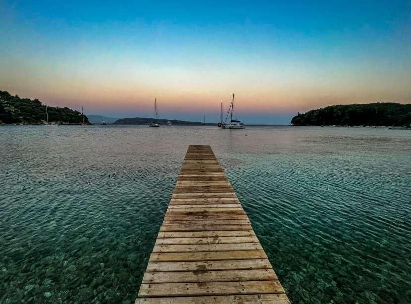
יום 3- 8 ליולי-
גם הבוקר קמנו יקיצה טבעית בשבע וחצי בבוקר ומיד יצאנו לטבילת הבוקר שלנו בים הנפלא. הפעם גם אני אזרתי אומץ וקפצתי מהמזח ישירות למים, תענוג.
אחרי ארוחת הבוקר שוב יצאנו לטייל, הפעם היעד שלנו הוא איזור פלאוקסטריצה- Paleokastritsa, ה-מפרץ בקורפו. כל התמונות על עלוני התיירים הם משם. מדובר ברצועת חוף מפורצת עם שפע חופים משגעים בצבעי טורקיז שקשה לקלוט שהם אמיתיים.
חשבתי בהתחלה להתחיל משייט בין החופים אולם לאור ניסיון האתמול עם כמות התיירים בכל פינה החלטנו דווקא להתחיל את הבוקר בכיף בחוף רוביניה.
הנסיעה לשם מעט למחיצה, במיוחד המטרים האחרונים עד החניה, בכביש צר ובשיפוע תלול מטה, אולם במקום יש חניה מסודרת בעלות של 3 יורו. משם ממשיכים לרדת בשביל עד החוף, הליכה קלילה של 7 דקות. ממליצה להגיע עד תשע וחצי בבוקר, יש משמעותית פחות אנשים. החוף משגע מזכיר חוף תאילנדי, מים טורקיז, מסביב הרים ירוקים פשוט מדהים. המים כלכך שקופים וצלולים שממש לא צריך מסיכת שנורקל, רואים הכל, אבל למי שרוצה לשנרקל כדאי להביא. המים בצד המערבי משמעותית קרים יותר מהצד המזרחי, עד כדי כך שבעלי סירב בתוקף להכנס, ממש ממש קשה, באמת קר. אני דווקא נהנתי מהקור של המים לעומת ה-30 מעלות שבחוץ, וכששוחים מתחממים מהר. גם כאן המים נהיים עמוקים מיד אחרי כמה צעדים.
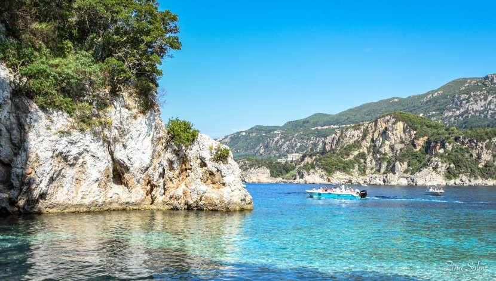
בילינו כשעתיים בחוף ומשם ללה גרוטה בר. מדובר בבאר שבנוי על צוק, ניתן להגיע בסירה ואפילו כדאי כי סיוט למצוא חניה- למזלנו היתה חניה בצידי הכביש לא רחוק משם, וגם אותה מצאנו אחרי 3 סיבובים. המקום חביב מאוד, מוזיקה נעימה, נשנושים, אפשר כמובן לקפוץ למים המזמינים כלכך, אם כי חשוב להביא נעלי ים כי יש סלעים.
שתינו לנו קפה חזק ומילקשייק, לא לקחנו מגבות וחבל דווקא הייתי זורמת על שחיה, בסוף ויתרנו, מאוד חם ודי הומה באנשים.
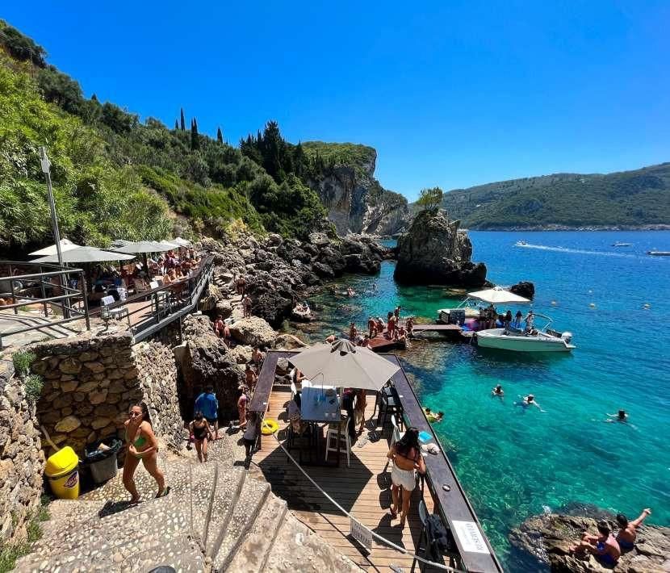
התחנה הבאה שלנו היא תצפית בלה ויסטה, שוב מטפסים גבוה בכבישים צרים ותלולים, כשברקע הים הכחול. ממש ליד בלה ויסטה יש רמזור ממש ארוך של 7 דקות, כך שאם פתאום אתם נתקעים אחרי תור מכוניות זה לא פקק, רק רמזור שישתחרר תוך 7 דקות.
סביב התצפית יש כמה מסעדות וטברנות שחולשות על הנוף, עצרנו בטברנה בלה ויסטה, האוכל לא ואו, אם כי סביר מאוד אבל משקה הלימונדה שלהם פשוט מדהים, וכך סעדנו לנו צהריים מול הנוף המדהים של מפרץ פלאוקסטריצה.
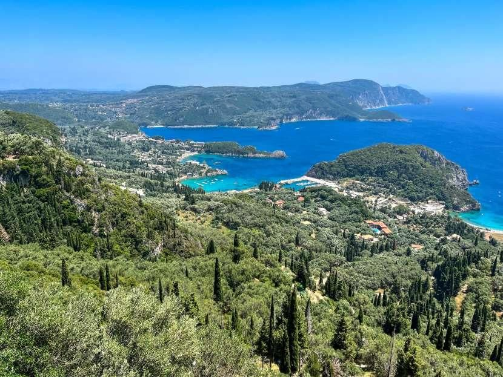
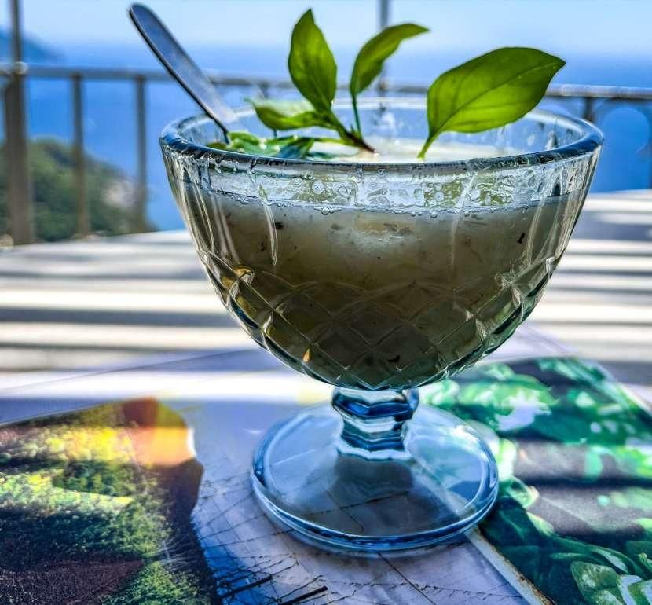
רבים עושים גם שייט חופים, או יורדים למצודה או לאקווריום שליד, האמת שהחום די עייף אותנו, לא כלכך התחשק לנו לחפש שוב חניה עד שנמצא מאיפה לקחת שייט, והאמת שבעלי בכלל לא זרם על שיט, אז החלטנו פשוט לחזור לשנצנצ קצת במלון- אנחנו בחופשה בכל זאת לא במרתון.
אחרי שנצ כיפי במיוחד עוד נשאר לנו זמן לטבילה בחוף שלנו, ירדנו לשם בחמש וחצי, כבר לא צריך לשלם על מיטה, הזמנו לנו כוס מוחיטו, וככה צופים לנוף ומעת לעת טובלים במים הקרירים, זאת חופשה.
את ארוחת הערב אכלנו במסעדת דמיטריס שנמצאת ממש על צלע ההר מול החדר שלנו, כך גם גילינו שיש חניה למעלה במלון. היינו יכולים ללכת ברגל אבל קצת חששנו לצעוד בכבישים האלה בחושך.
המסעדה ממש נעימה וצופה על מפרץ קלאמי ועל המלון שלנו, האוכל פשוט מעולה- ממליצה על קינוח עוגת התפוזים שלהם, מושלם פשוט.
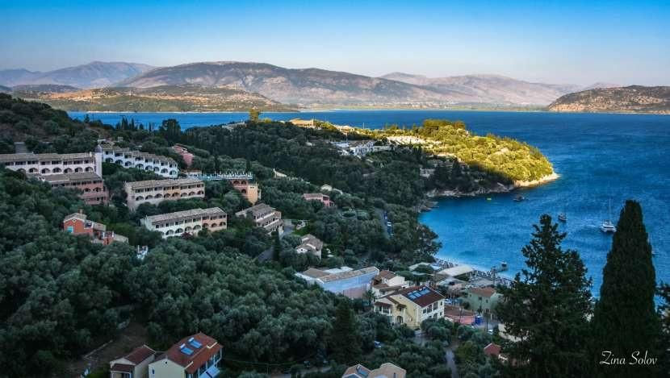
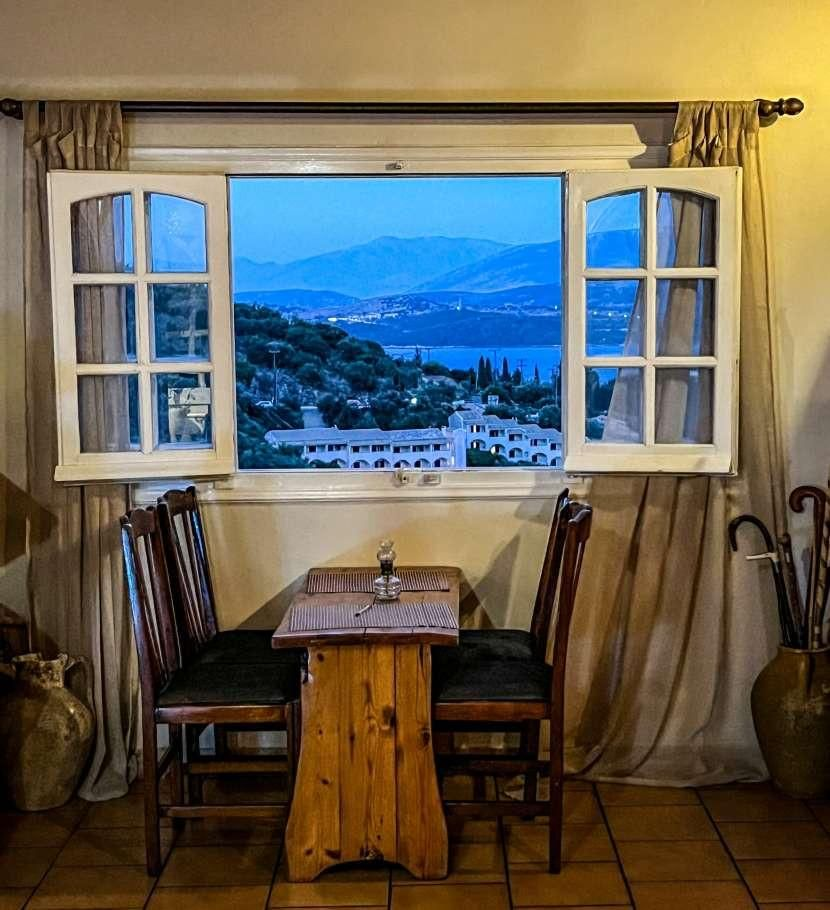
קישקשנו קצת עם דמיטריס בעל המקום שסיפר שבמקור הוא בכלל חשמלאי, שבנה בעצמו את הבית לפני 20 שנה ואת המסעדה, בזמנו חשבו שהוא סתם זורק כסף אבל הנה היום יש לו עסק משגשג ו-3 בתים עם מטע שלם של עצי זית.
הוא גם סיפר על האי שהתחיל להתעורר לתיירות בשנות ה-90, על כך שלפני מאות שנים, השלטונות נהגו לשלם כסף על כל עץ שניטע ולכן האי הפך להיות ירוק.
שבעים ומרוצים חזרנו למלון, עלינו לרחבת הבריכה לתצפית יפה על המפרץ. עוד יום מוצלח הגיע לקיצו.
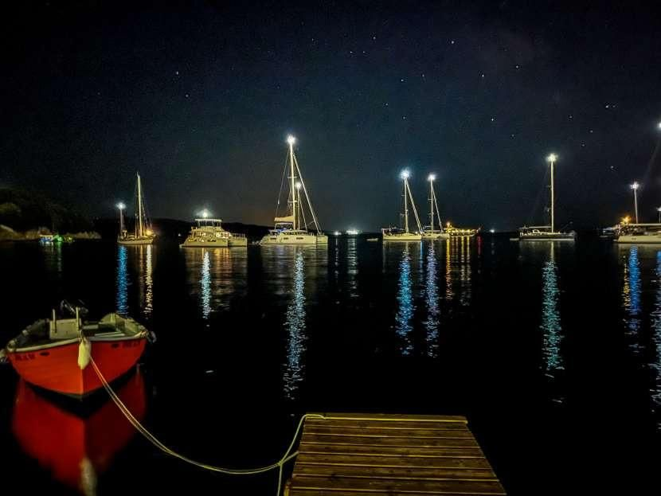
יום 4- 9 ליולי-
גם הבוקר התחיל בטבילה בים, זו כבר מסורת. אבל הפעם בניגוד לטירוף הטיולים ביומיים הראשונים, היום אנחנו לוקחים את היום ברגוע.
אחרי ארוחת הבוקר, החלטנו לנסוע לחוף שנמצא ממש ליד קלאמי- חוף קרסיה- Kerasia beach, האמת אין שום דבר מיוחד בחוף, חוף יפיפה עם מים צלולים ונעימים, פשוט רצינו לגוון ולא התחשק לנו לנסוע רחוק מידי. החוף בלי שמשות ולא מסודר, אבל החניה ממש על החוף ותכלס גם הוא משגע.
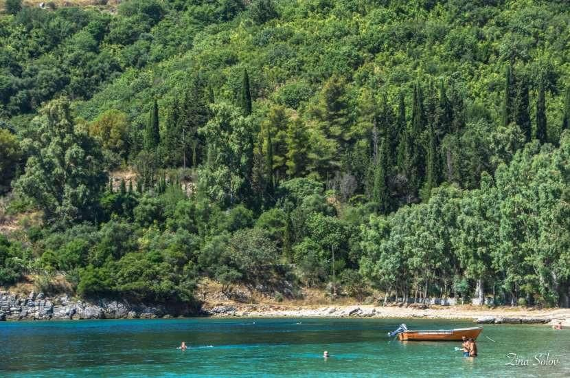
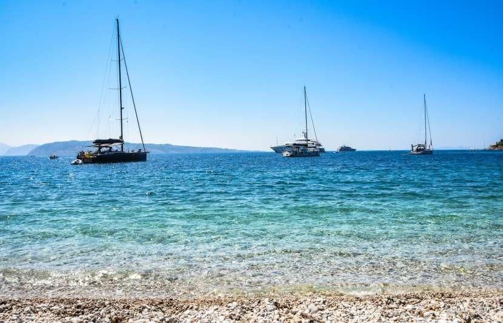
בילינו שם שעתיים, אחרכך המשכנו לעיירה החביבה שליד סט. סטפנוס, במקום יש נמל קטנטן וממנו אפשר לקחת שייט סביב החלק הצפוני של קורפו או לשוט לקרקירה, אנחנו החלטנו לאכול במסעדת הדגים המעולה EUCALYPTUS. בדרך חזרה עצרנו לתצפית חביבה על העיירה והנמל.
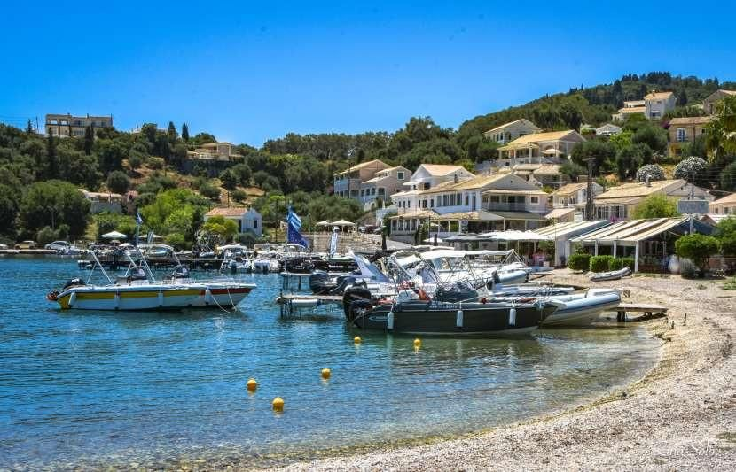
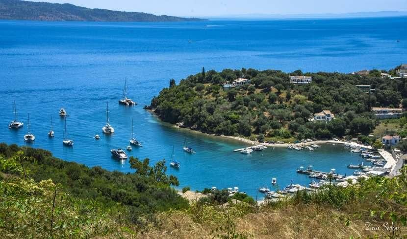
גם היום חזרנו לשנצנצ, בכל זאת חופשה לא.
בערב יצאנו לעיירה המקסימה קסיופי, ממליצה להגיע לקראת שקיעה. חנינו בחניון בתשלום בכניסה לעיירה, 5 יורו, משם הליכה קצרה וקלילה לאורך שדרת החנויות של העיירה ועד הנמל, סביב הנמל מרוכזות כל המסעדות, גלידריות ומה לא. מהנמל כדאי לצעוד לאורך השביל סביב החוף עד לחוף המקסים בטריה, הליכה קלילה אבל הנוף משגע. בדיעבד חבל שלא בילינו קצת גם בחוף בטריה הוא נראה מזמין ביותר.
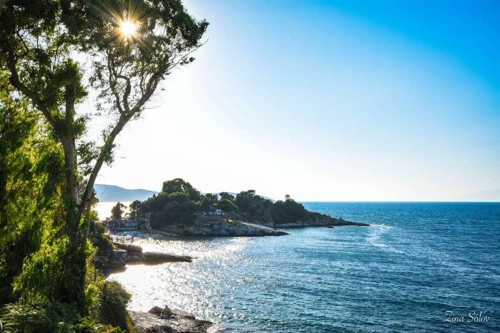
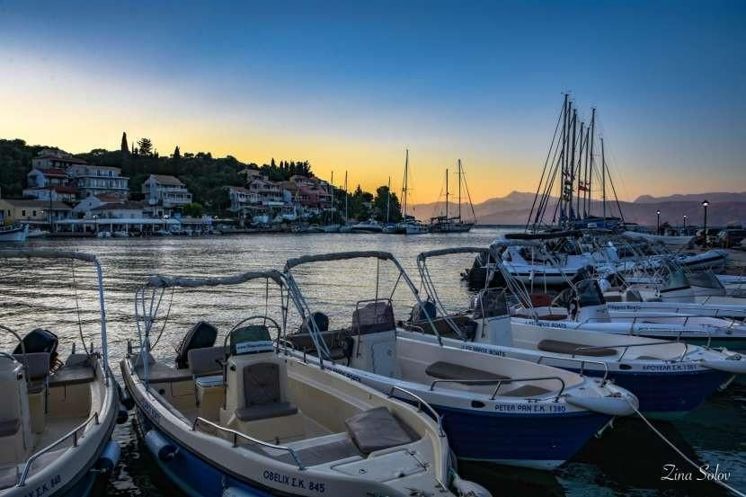
לעת ערב גם מזג האויר משתפר, יש בריזה ים תיכונית והרבה יותר נעים לטייל בחוץ.
את ארוחת הערב אנחנו אוכלים בטברנה מול הנמל- Tavernaki, traditional taverna. ביוון קשה שלא להצליח עם אוכל. הסתובבנו עוד קצת ברחובות ומשם חזרה למלון.
יום 5- 10 ליולי-
היום האחרון שלנו בקורפו, האמת די מיצינו, ומתחילים להתגעגע לילדים.
טבילת בוקר אחרונה בהחלט במפרץ קלאמי המדהים. הטיסה שלנו בשש בערב כך שיש לנו כמעט יום שלם לטייל, עזבנו את המלון ונסענו לכיוון קרקירה, הגיעה הזמן שנראה את העיר הגדולה של קורפו.
עצירה ראשונה בסניף הענקי של ג'מבו- כי צריך לקנות לילדים מתנות, פיצקה כל יום שואלת מה קנינו לה.
הסניף כלכך גדול שאני מיד קיבלתי סחרחורת. בזריזות מפתיעה קנינו מתנות ונסענו לטייל בעיר.
כאן התכנון שלי לא היה מוצלח. בדיעבד כדאי לטייל בסמטאות קרקירה בשעת ערב ולא בחום של 30 מעלות- כן, גם במחיר צפיפות יתר מעומס תיירים. אז אנחנו אכן טיילנו בקרקירה, בסמטאות, סביב המצודות ולאורך החוף בחום של 30 מעלות, נטפנו זיעה, והתבשלנו בחום. העיר נחמדה אבל לא באמת נהננו מזה.
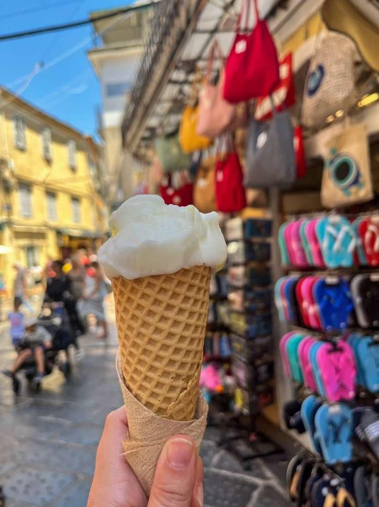
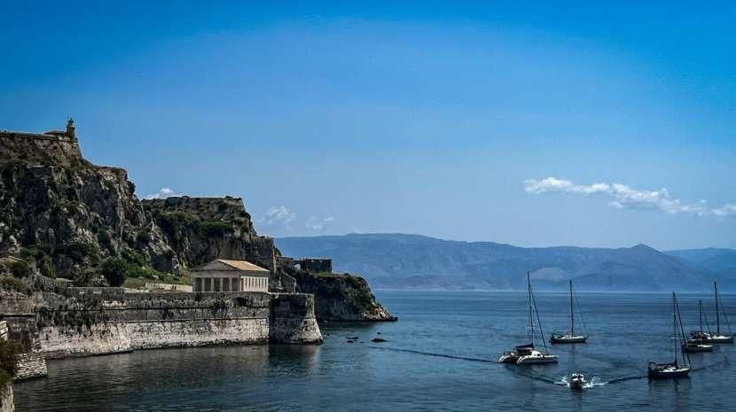
משם המשכנו לקנוני- Kanoni כדי לראות את המנזר ואי העכברים. היינו פה ביום הראשון כשאכלנו ב-SKY VIEW, הפעם ירדנו עד החוף, במקום חניון חינמי ענקי. מצד ימין יש גשר ימי שעליו ניתן לעמוד ולתצפת על המטוסים שנוחתים וממריאים ממש מעל הראש.
בזמן שבעלי היה עסוק בצילום מטוסים, אני המשכתי עד למנזר Vlacherna Monastery, מנזר יפיפה שנמצא ממש על המים. ניתן גם לקחת סירה לאי העכברים שנמצא בסמוך אבל אין כלכך מה לעשות שם.
אחרי שסיימנו סשן צילומים טיפסנו בשביל עד המסעדות למעלה, אל תצפו למסעדות אוכל אלא קפיטריות, מצד שני כלכך חם לנו שאין לנו תיאבון בכלל.
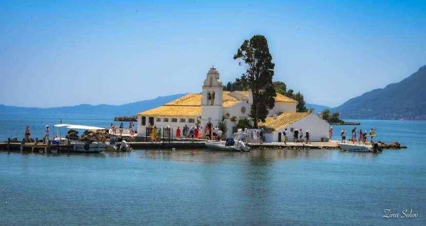
אז אחרי צינון של מילקשייק הגיע הזמן להתקדם לכיוון השדה, החזרנו את הרכב וקדימה לטיסה. שימו לב בידוק הדרכונים אחרי הדיוטי פרי ויש שם תור מטורף אז אל תחכו לרגע האחרון.
וכך תמה החופשה שלנו.
תודה שקראתם
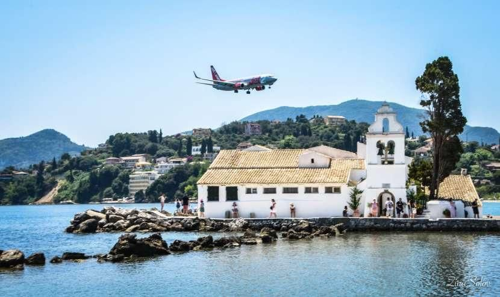